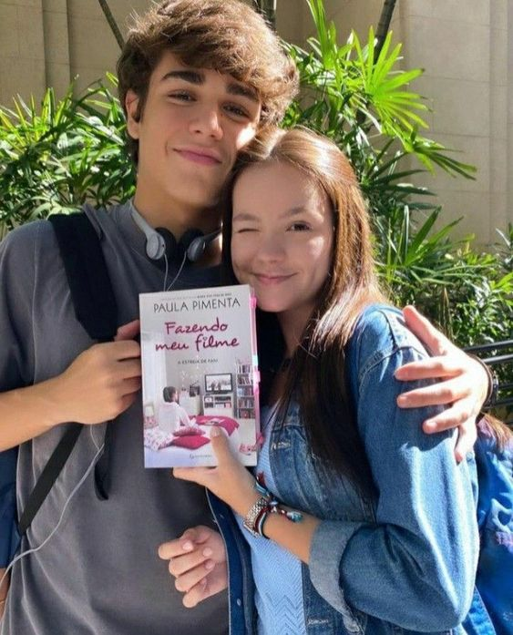

Léo e Fani no Livro
Em Fazendo Meu Filme, Léo e Fani são personagens que realmente encantam os leitores. Léo é um menino muito romântico e cheio de amigos que sempre gostou da sua melhor amiga, Fani. Ela é uma jovem quietinha, supercriativa, muito fã de "filmes de amorzinho" e que sonha em um dia ser diretora de cinema. O livro nos mostra toda a trajetória do romance entre eles, desde o início de sua amizade até o momento em que eles finalmente conseguem ficar juntos (spoiler: eles só terminam juntos no quarto livro). Cada cena que mostra o desenvolvimento do relacionamento deles é linda de se ler, isso que faz você se apaixonar por eles.
Os livros em ordem cronológica
- Fazendo Meu Filme 1 - A estreia de Fani
- Fazendo Meu Filme 2 - Fani na terra da rainha
- Fazendo Meu Filme 3 - O roteiro inesperado de Fani
- Fazendo Meu Filme 4 - Fani em busca do final feliz